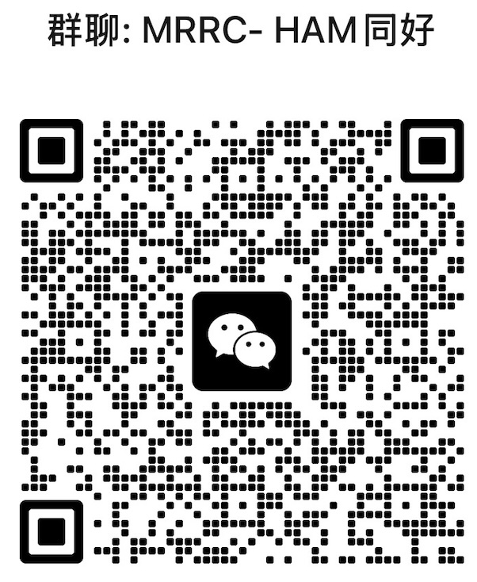

Use SunMRRC when your hardware is SunSDR2 DX and you need server-side UDP IQ demodulation with stable client APIs.
From UDP IQ streaming to browser-based FFT waterfall — every layer reverse-engineered and rebuilt.
Server-side IQ demodulation via numpy/scipy. DDC + fractional resampler + overlap-save Hilbert SSB modulator. WFM hi-fi mode with cubic resampling.
Real-time spectrum from IQ samples. 512-bin FFT with dynamic frequency scale (39k/78k/156k/312k IQ bandwidth). Exact sample rate lookup for pixel alignment.
Tagged dual-codec transport: Opus 64kbps + Int16 PCM fallback. WDSP NR2/ANF/SNB at IQ level (before demodulation). Full WDSP settings panel with persistence.
/WSCTRX (bidirectional cmd:val), /WSaudioRX (tagged Opus/PCM), /WSaudioTX (mic uplink), /WSspectrum (512-bin binary), /WSATR1000 (tuner). Protocol-as-contract enabled SunsdrMobile with zero server changes.
100% unknown protocol surface. 40+ Wireshark sessions to decode 12 command types, 30-packet boot sequence, and proprietary binary UDP protocol. PROTOCOL.md with 22 sections.
PTT safety model (ACK × 3, watchdog), WDSP integration pattern, multi-instance architecture, design tokens, AudioWorklet RX pipeline — inherited from MRRC, not re-solved.
15-chapter SDD covering business direction, system context, architecture decisions, service model, component model, operational model, and PTT safety architecture.
SunsdrMobile is this server's native iOS client. It opens the same four WebSocket connections the browser does — ctrl, RX audio, TX audio and spectrum — and renders them in SwiftUI instead of HTML.
Four WebSocket channels, one server. The app is not a fork of the server — it is a second front end for it, which is why the two now live in one repository.
App Store submission and every audio-path judgement on a real handset stay with a human. Simulator output is never presented as on-air evidence — the same rule that governs every claim in this ecosystem.
As of 2026-09-12 the app lives at SunsdrMobile/ inside this project's repository, with its full commit history imported. It is no longer tracked as a separate project.
Scan the QR code with WeChat to join the MRRC-HAM group.

QR code valid until Aug 29, 2026. Will be updated when refreshed.
What this project loads before editing, what a human still signs off, and what stays readable afterwards.
AGENTS.md, CLAUDE.md and the SDD/ source tree, all read before editing. There is no machine-readable constraint registry, so no automated pre-edit gate is claimed.PROTOCOL.md and the SDD chapters remain as the durable, reviewable description of the link.